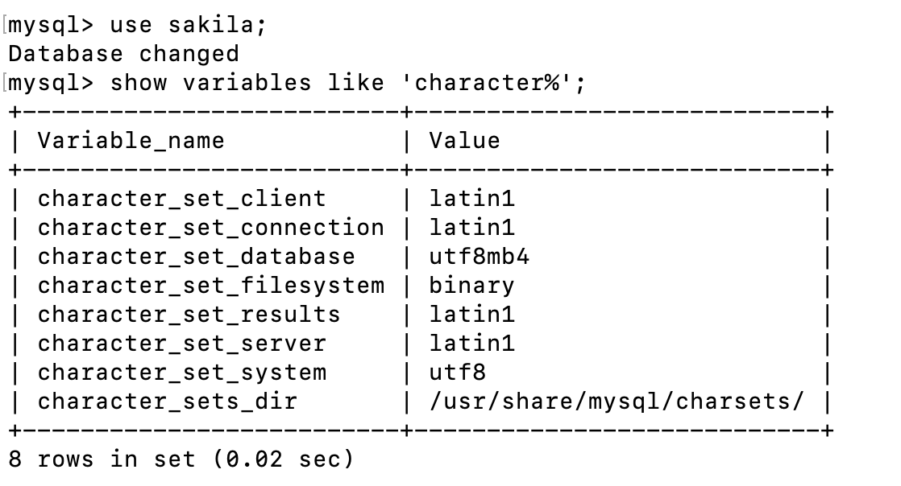
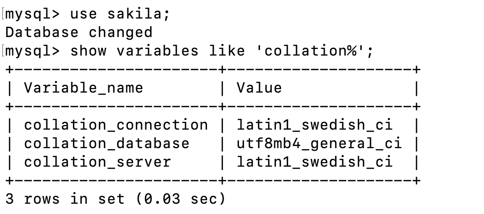
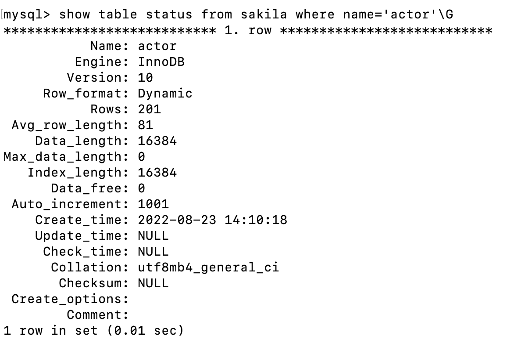

MySQL如何查看字符集
最近团队在搭建新的测试环境，在搭建过程中需要建立对应的新的MySQL数据库。在搭建新的数据库过程中，遇到了几个字符集相关的问题，比如：如何查看库的字符集，如何查看表的字符集，charset和collation的区别是什么。这里做一个记录和总结。
环境说明
- MySQL版本：5.7.28
- 数据库：sakila，这个是MySQL官网提供的数据库样例
如何查看数据库的字符集
方式一
1 | use sakila; |
返果如下：

从返回的结果集里我们可以看到，character_set_database的值为utf8mb4，也就是说sakila数据库所使用的字符集为utf8mb4。
方式二
1 | use sakila; |
返回如下：

从返回的结果集里我们可以看到，collation_database的值为utf8mb4_general_ci，也就是说sakila数据库所使用的字符集为utf8mb4。
如何查看表的字符集
sakila库里有一张actor表，我们就来查这张表的字符集。
方式一
1 | show table status from sakila where name='actor'; |
返回如下：

从返回的结果集里我们可以看到，collation的值为utf8mb4_general_ci，也就是说actor表所使用的字符集为utf8mb4。
方式二
1 | show create table actor; |
返回如下：

从返回的结果集里我们可以看到，charset的值为utf8mb4，也就是说actor表所使用的字符集为utf8mb4。
charset和collation有什么区别
这一会charset，一会collation的，那这两个有什么区别呢？首先从中文意义上看，charset是字符集，collation是整理，然后我们可以看一下MySQL官网做出的解释：
A character set is a set of symbols and encodings. A collation is a set of rules for comparing characters in a character set.
大意是说，charset是一系列符号和编码的集合，而collation是在使用某个特定的charset时，在字符之间进行比较的一系列规则的集合。
也就是说，charset决定了字符在数据库里最终的存储所使用的字符集，而collation则决定了字符之间如何进行比较，比如order by，group by，distinct等。